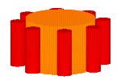
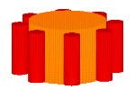
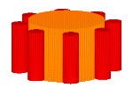

Let us consider a single hard magnetic bubble in a disk shaped material. We will consider the magnetic bubble to be "pinned" in the material. That means that the bubble can not translate through the material. Pinning the bubble can be accomplished by placing a dot of permalloy on the surface of the material. (There are other ways to pin or confine the magnetic bubble to the region in the material in which it occurs. For example, if the material is only slightly larger than the magnetic bubble as in magnets composed of magnetic particles.)
The "X"s in the bubble's wall are to represent the Bloch lines.
When this disk is placed in a magnetic field gradient, the Bloch lines will re-distribute themselves in the bubble's wall.
Now remember that the bubble is "pinned" in the material so that it can not translate through the material. Since the magnetic bubble is not moving through the material, no net "sideways" forces occur. (Remember from the previous page we said that the special "sideways" force occurs when the bubble is moving through the material.)
We can get the bubble to "move through the material" if we now rotate the material in the magnetic field gradient.
As you can see, as the disk rotates, the Bloch lines (indicated by the "X"s) have to move through the material in order to stay on the right hand side of the magnetic bubble. The "V" is a fixed point in the material to show that the "X"s are truly moving through the material.
Now that we have the Bloch lines ("X"s) moving through the material a net sideways force (perpendicular to the direction of the magnetic field gradient) will exist on the magnetic bubble. But since the bubble is pinned (or otherwise confined) the bubble can not move sideways. The bubble now pushes against the material causing the material to move sideways.
This sideways force on a single magnetic bubble is very small. What you have to remember is that in a real magnetic disk (say, 1 inch in diameter by 1/4 inch thick) there are many thousands of magnetic particles. If we can cause a hard magnetic bubble to form in each of these particles, then there would be many thousands of little forces all pushing against the material. This is where the "special" magnetization process comes in (to be explained shortly).
Once we magnetize several of these disk magnets so that they all have hard magnetic bubbles in them, we can stack them together to form cylinders (red). We can then take these cylinders and place them around a big disk or cylinder magnet (orange) which we can use as the magnetic field gradient source. You may have to initially push these stacks of disk magnets (red) around the magnetic field gradient source until the generated "sideways" force is large enough to make the disks rotate on their own.

The information provided here is subject to patent protection. USA patent pending, June, 1998
Usage Note: My work is copyrighted. You may use my work but you may not include my work, or parts of it, in any for-profit project without my consent.